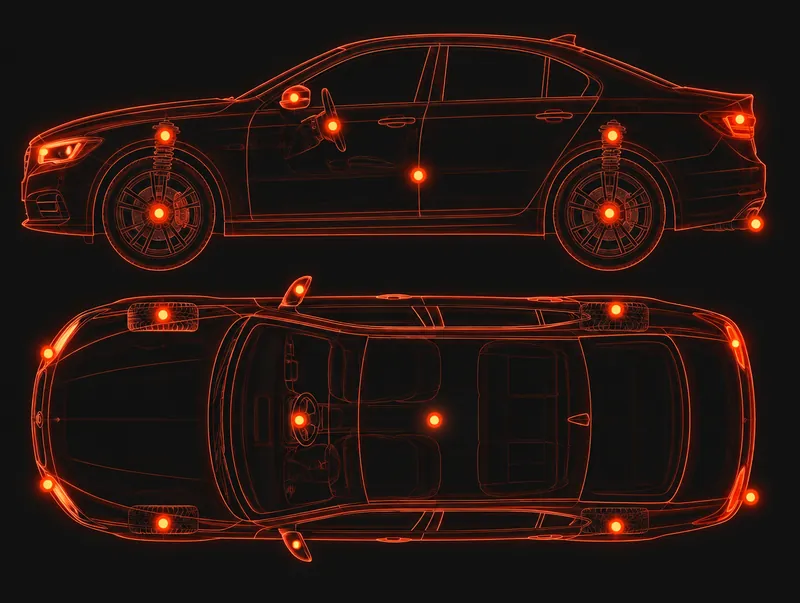

Inicio / Inspecciones
Inspecciones estatales y de emisiones de PA en Phoenixville
Diverse Autoworks ofrece servicios de inspección estatal y de emisiones para autos, camiones, remolques y motocicletas. Llame al 610-650-0316 para confirmar qué inspección necesita su vehículo y coordinar su visita.
La inspección de seguridad y la prueba de emisiones son distintas
No todos los tipos de vehículo requieren las mismas pruebas. Llame con los datos de su vehículo y le confirmaremos qué corresponde.
Inspección estatal de seguridad
Disponible para autos, camiones, remolques y motocicletas.
Pruebas de emisiones
Disponible como parte de nuestros servicios de inspección estatal y de emisiones. Llame para confirmar si su vehículo la necesita.
Vehículos que inspeccionamos

- Autos
- Camiones
- Remolques
- Motocicletas
Precios y tiempos
PennDOT indica que las tarifas de inspección se publican en las estaciones de inspección oficiales y no incluyen las reparaciones para corregir defectos. Llame al 610-650-0316 para conocer nuestra tarifa actual y la disponibilidad de citas. El tiempo depende de su vehículo y de la inspección requerida; no publicamos una garantía de tiempo de finalización fija.
Qué esperar en una inspección de PA
Qué revisa la inspección de seguridad
PennDOT enumera estos elementos para autos de pasajeros y camionetas ligeras: componentes de la suspensión, dirección, sistemas de frenos, llantas y ruedas, sistemas de iluminación y eléctricos, cristales, espejos, lavaparabrisas, desempañador, limpiaparabrisas, sistemas de combustible, velocímetro, odómetro, sistemas de escape, bocina y dispositivos de advertencia, la carrocería y el chasis.
Su calcomanía de inspección
Después de aprobar, la mayoría de los autos de pasajeros y camionetas ligeras reciben una calcomanía válida por un año a partir del mes de la inspección o por un año a partir del vencimiento de la calcomanía actual, según PennDOT.
Pruebas de emisiones en el condado de Chester
El condado de Chester forma parte de la región de emisiones del área de Filadelfia de Pensilvania, junto con los condados de Bucks, Delaware, Montgomery y Filadelfia, según Drive Clean PA. La prueba de emisiones que corresponde depende de su vehículo; llámenos con el año y el tipo.
Fuentes: Preguntas frecuentes de PennDOT sobre la inspección de seguridad · Página de PennDOT para estaciones y mecánicos · Drive Clean PA: área de Filadelfia
Inspecciones estatales de motocicletas
Las inspecciones estatales de motocicletas forman parte de nuestros servicios de inspección, y las motocicletas de Pensilvania ahora se pueden inspeccionar todo el año. Llame al taller para coordinar su visita, o lea la guía para ver qué cubre PennDOT.
Llame por una inspección de motocicleta Guía de inspección de motocicletas todo el año
Preguntas frecuentes
Respuestas sobre nuestros servicios. Cuando algo depende de su vehículo, llame y se lo confirmaremos.
Más preguntas y respuestas